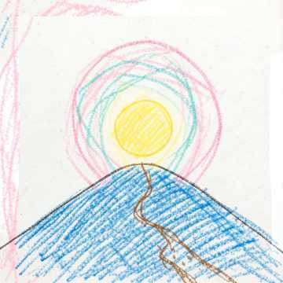

✍️ Biên soạn: Savio. Nguyễn Hoàng Vũ & Dominico. Vương Ngọc Gia Bảo📅 Mùa Giáng Sinh 2026
🌿 CẢNH 1: AĐAM - EVÀ
Sáng tạo vũ trụ, muôn loài & Biến cố Sa ngã
🎙️ Dẫn
Khi vũ trụ còn bao phủ trong tĩnh lặng, Đức Chúa là Thiên Chúa, Đấng tạo hóa muôn loài đã phán: "Hãy có
ánh sáng", và từ lời quyền năng ấy, ánh sáng bừng lên khởi đầu cho công trình sáng tạo vĩ đại.
Ngài phân rẽ trời và đất, đại dương và đất liền, những ngọn núi, những dòng sông,
cây cỏ và muôn loài muôn vật / đều được Ngài dựng nên với sự hoàn mỹ tuyệt vời. Nhưng, tất cả chỉ là sự
chuẩn
bị cho đỉnh cao của công trình tạo dựng.
Đức Chúa là Thiên Chúa dựng nên Ađam từ bụi đất / và thổi vào ông hơi thở của sự
sống, / ông là con người đầu tiên trên trái đất.
🎭 Cảnh Ađam vui đùa cùng muôn thú.
Ađam
Bạn mập kia đứng lại, bạn dễ thương quá, lông của bạn thật là mềm.
Muôn thú
Ađam ơi, beeeeeeee mình cũng muốn được gọi bằng tên giống như cậu vậy đó, hay là cậu đặt tên cho tụi mình
đi.
Ađam
Uhhhhh, đặt tên hả? Được rồi, vậy thì tớ gọi cậu là cừu nha, còn cậu là sư tử, cậu là đại bàng…..
🎙️ Dẫn
Đức Chúa là Thiên Chúa để Ađam đặt tên cho muôn vật muôn loài, nhưng Ađam không tìm được một trợ tá tương
xứng trong môn loài.
🎭 (Ađam và muôn thú ngủ)
Đức Chúa phán
Con người ở một mình thì không tốt, Ta sẽ làm cho nó một trợ tá tương xứng với nó, và từ xương lấy từ Ađam,
Đức Chúa dựng nên Evà / người bạn đồng hành trọn đời của Ađam.
Ađam Evà không chỉ là con người đầu tiên / mà còn là biểu tượng của tình yêu, / sự khởi đầu của con người
trong vườn Địa Đàng, / nơi ngập tràn ân sủng và tình yêu của Thiên Chúa.
🎶NHẠC CẢNH 1 • ĐỊA CẦU HOAN CA
Múa bài Địa cầu hoan ca _ Sơn Túi Đỏ
Địa Cầu Hoan Ca (Sơn Túi Đỏ)
MP3 AUDIO
"🎶 (Múa bài Địa cầu hoan ca _ Sơn Túi Đỏ)"
00:00
--:--
💡
Lưu ý Đạo diễn & Bộ phận Âm thanh:
Sau lời tạo dựng Evà, bật nhạc Địa Cầu Hoan Ca để Ađam, Evà và muôn thú múa trong vườn Địa Đàng.
Hết bài múa, chuyển sang cảnh Evà nhởn nhơ tiến dần tới cây cấm.
1 • Lời 1
1. Vạn vật trên thế giới này đều do bàn tay của Chúa Sông núi biển trời trăng sao đều do tay Chúa
tác tạo Ngài dựng nên ánh sáng chiếu soi vạn vật trong bóng đêm Ngài dựng nên muôn thú, hát ca tôn
vinh danh Chúa mãi muôn đời Và Ngài tạo tác nên con người giống hình ảnh Ngài Cho con người làm
chủ mọi vật Ngài tạo nên.
[Chorus:]
Tạ ơn quyền năng của Chúa ngất cao từ tầng trời
xanh Vì Ngài yêu thương con nên đã tác thành mọi thứ cho con Để con ra đi mọi nơi truyền rao danh
Chúa giữa đời Địa cầu cùng vang tiếng nhạc và tôn vinh danh thánh Chúa muôn đời (2
lần) Dâng lời tạ ơn.
🎭 Eva nhởn nhơ quanh vườn địa đàng, tiến dần tới cây cấm. Bỗng có tiếng ...
Rắn
Chào Evà, / người phụ nữ xinh đẹp nhất quả đất.
Evà
Rắn thật là dẻo mép, / ở đây có mỗi mình tôi là nữ hà, / thì tôi đây không đẹp nhất / thì là đẹp nhì
aaaaaaà?
Rắn
Hỡi con người, / phải chăng Thiên Chúa cấm các ngươi không được ăn hết mọi trái cây trong vườn?
Eva
Không phải đâu rắn à, tất cả trái cây trong vườn, thì chúng tôi được ăn. Chỉ trừ cái trái cây ở giữa vườn
thì
không. Vì Thiên Chúa đã bảo: các ngươi không được ăn, không được đụng vào kẻo phải chết.
Rắn
Chẳng chết chóc gì đâu. / Nhưng Thiên Chúa biết ngày nào ông bà ăn trái cây ấy, / mắt ông bà sẽ mở ra / và
ông bà sẽ nên như những vị thần, biết điều thiện điều ác.
Này Evà, hãy ăn thử một trái xem, ta nói / nó ngooooọt / nó ngoooooon lắm.
Đã vậy / ăn vào rồi / thì sẽ được khôn ngoan / được sáng láng như Thiên Chúa.
🎭 (Eva bối rối nghĩ ngợi rồi quay lại nhón gót hái trái và ăn, rồi đưa cho cả chồng cùng ở đó với mình, ông
cũng ăn). Và kìa chuyện gì đã xảy ra. Ađam và Eva xấu hổ chạy vô trong cánh gà mặc trang phục lá cây.
Chúa gọi
Adam! Adam! Ngươi ở đâu?
Adam
Tôi đã nghe tiếng gọi của Người, nhưng tôi sợ / vì tôi trần truồng, nên tôi ẩn núp.
Chúa
Ai đã cho ngươi biết là ngươi trần truồng, hay ngươi đã ăn trái cây mà Ta cấm ngươi không được ăn?
Adam
Người đàn bà mà Ngài đã đặt bên tôi, chính nàng đã cho tôi trái cây ấy và tôi đã ăn.
Chúa
Tại sao ngươi làm như vậy hỡi Eva?
Eva
Con rắn đã lừa dối tôi nên tôi đã ăn.
Thiên Chúa
Hỡi loài rắn độc, bởi vì ngươi đã làm điều đó thì ngươi hãy trở nên đồ bị chúc dữ. Ngươi phải bò đi bằng
bụng
và phải ăn bùn đất mọi ngày trong đời mi. Ta sẽ đặt mối thù giữa mi và người đàn bà, giữa dòng dõi
mi và dòng dõi người, dòng dõi người đàn bà đạp nát đầu mi, còn mi sẽ rình cắn gót chân nó.
✨ CẢNH 2: TRUYỀN TIN
Kế hoạch Cứu Độ & Sứ thần Gabriel truyền tin cho Đức Maria
🎙️ Dẫn
Tổ tông loài người đã phạm tội và đã bị đuổi khỏi vườn địa đàng, nhưng Thiên Chúa vẫn một lòng yêu thương,
Ngài đã chuẩn bị một kế hoạch để cứu chuộc loài người.
Kế hoạch ấy đã trải dài…..rất dài, và trong suốt thời gian ấy Thiên Chúa vẫn luôn
chăm sóc và hướng dẫn dân Ngài qua các Tổ phụ như Abraham, Issaac, Giacop, qua các Thẩm phán, các tiên tri…
Sau khi đã chuẩn bị và dọn lòng cho dân Chúa đón nhận Đấng Cứu Thế, giờ đây chính
là thời điểm Thiên Chúa thực hiện lời minh ước mà Người đã ký kết với Tổ phụ chúng ta.
Vào thời Hoàng đế Cesar Augustô, Thiên Chúa đã sai Sứ Thần của Người đến với một
trinh nữ đã đính hôn với 1 người tên là Giuse thuộc chi họ Đavid. Trinh nữ tên là Maria, Maria cũng như
những người Do Thái lúc bấy giờ, hết lòng cầu khẩn nài xin Thiên Chúa ban Đấng Cứu Tinh cho dân Người.
🎭 (Thiên thần Gabriel truyền tin cho Đức Maria)
🎶NHẠC CẢNH 2 • TRUYỀN TIN
Sứ Thần Gabriel & Đức Maria
Truyền Tin (Sứ Thần & Maria)
MP3 AUDIO
"🎶 Sứ thần Gabriel truyền tin cho Đức Maria & Tiếng thưa Xin Vâng"
00:00
--:--
💡
Lưu ý Đạo diễn & Bộ phận Âm thanh:
Sau lời dẫn kết thúc ("hết lòng cầu khẩn nài xin Thiên Chúa ban Đấng Cứu Tinh cho dân Người"),
bật nhạc Truyền Tin. Sứ Thần Gabriel và Đức Maria diễn đối thoại theo lời ca và cử chỉ thánh
thiện.
Hết bài hát, chuyển sang Cảnh 3: Gioan Tẩy Giả.
Sứ thần Gabriel
Mừng vui lên, mừng vui lên, hỡi Đấng đầy ơn sủng
Thiên Chúa ở cùng bà, Thiên Chúa hằng ở với bà.
Hỡi Maria xin đừng sợ vì bà đẹp lòng Thiên Chúa.
Này đây bà sẽ thụ thai, sinh hạ một con trai, và đặt tên là Giêsu.
Người sẽ nên cao cả, và sẽ được gọi là Con Đấng Tối Cao.
Thiên Chúa sẽ ban cho Người ngai vàng vua Đavit tổ tiên Người.
Người sẽ trị vì nhà Giacob đến muôn đời, và triều đại Người sẽ vô cùng vô tận.
Mẹ Maria
Việc ấy sẽ xảy ra cách nào, vì tôi không biết đến việc vợ chồng?
Sứ thần Gabriel
Thánh Thần sẽ ngự xuống trên bà, và quyền năng Đấng Tối Cao sẽ rợp bóng trên bà.
Vì thế Đấng Thánh sắp sinh ra sẽ được gọi là Con Thiên Chúa.
Kìa Isave chị họ bà tuổi đã già thì nay đã mang thai, vì không có việc gì mà Thiên Chúa không làm được.
Mẹ Maria •
Lời Xin Vâng
Vâng, tôi đây là nữ tỳ của Chúa
Xin Chúa cứ làm cho tôi như lời sứ thần truyền.
Vâng, tôi đây là nữ tỳ của Chúa
Xin Chúa cứ làm cho tôi như lời sứ thần truyền.
🕊️ CẢNH 3: GIOAN TẨY GIẢ
Đức Maria thăm viếng bà Elisabét & Biến cố sinh Gioan Tiền Hô
🎙️ Dẫn
Và từ nơi hoang địa cằn cỗi, có tiếng hô lớn: "Hãy dọn đường cho Chúa, hãy sửa đường Chúa cho ngay
thẳng, và muôn dân sẽ nhìn thấy ơn cứu độ của Thiên Chúa chúng ta."
Và Maria vội vã lên đường đến nơi hoang địa cằn cỗi ấy, đến một thành ở miền núi
của nhà Giuđa để thăm viếng và chăm sóc cho người chị họ của cô là Elisabét hiện đang mang thai được 6 tháng
như lời Thiên sứ Gabriel đã loan báo.
Mẹ Maria
(Vừa mới đến) Chị Elizabeth ơi, chị Elizabeth...
Bà Elizabeth
Ủa, Maria!
Mẹ Maria
Dạ em mới tới. Em chào anh Da-ca-ri-a nha...
Da-ca-ri-a
(Ú ú ớ ớ gật đầu vui vẻ chào lại.)
Maria
Ủa, anh Da-ca-ri-a bị sao vậy chị?
Bà Elizabeth
Ảnh bị câm rồi, cái tội không tin lời Thiên thần làm chi để người phạt cho ra như vậy đấy... nhưng em yên
tâm, thiên thần đã nói rồi chỉ bị 1 thời gian thôi, chứ hổng có bị luôn đâu.
Da-ca-ri-a
(Ú ú ớ ớ gật đầu ra vẻ đồng ý.)
Bà Elizabeth
Thôi, vô đây đi em / Maria ơi, em coi nè, vừa mới thấy em thôi là con chị nó đạp bịch bịch luôn á. Y như là
nó nhảy lên vui mừng vậy đó. Nè coi nè coi nè. Bởi vậy quá diễm phúc cho chị được Mẹ Thiên Chúa đến viếng
thăm như vậy.
Mẹ Maria
Chị, anh nói gì vậy chị?
Bà Elizabeth
Là Hallelujah, là chúc tụng Đức Chúa đó em. Thôi đi vô đây / kể cho chị nghe / những việc mà Thiên Chúa đã
làm cho em đi.
Mẹ Maria
(Thoại) Dạ, và em đã gặp một thiên sứ là Gabriel, người đã cho em biết em sẽ cưu mang con Thiên
Chúa được thụ thai bởi quyền năng Chúa Thánh Thần và em đã thưa: xin vâng.
🎶NHẠC CẢNH 3 • MAGNIFICAT
Maria, Elisabet & các mục đồng múa
Magnificat
MP3 AUDIO
"🎶 Maria và Elisabet và các mục đồng múa bài Magnificat"
00:00
--:--
💡
Lưu ý Đạo diễn & Bộ phận Âm thanh:
Sau câu "và em đã thưa: xin vâng.", bật nhạc Magnificat để Maria, Elisabet và các mục đồng múa.
Hết bài hát, chuyển sang lời dẫn ngày vui của gia đình ông Da-ca-ri-a.
Lời 1 • Mẹ Maria
Hồn con xin tôn vinh Chúa Thần trí con vui mừng hân hoan Vì Đấng Cứu Độ đoái nhìn đến con Phận
tôi tớ nhỏ bé hèn mọn.
Điệp khúc •
Mẹ Maria
Mừng vui lên, hồn con ơi! Ngợi khen danh thánh
của Ngài Từ nay muôn thế hệ Diễm phúc gọi tên con.
Lời 2 • Mẹ Maria
Đấng Toàn Năng Chí Thánh Chí Tôn Đã làm cho con những điều cao cả Lòng nhân ái của Ngài trải qua
muôn thế hệ Dành cho ai kính sợ Ngài.
Lời 3 • Mẹ Maria & Elizabeth
Cánh tay Ngài giơ oai quyền Tan tác kẻ kiêu căng trong lòng Hạ người quyền thế khỏi ngai Nâng
kẻ khiêm nhường lên cao. Kẻ đói nghèo Ngài ban đầy ơn Người giàu sang về tay trắng Lời hứa xưa
Ngài vẫn nhớ Cùng tổ tiên muôn đời.
Kết • Mẹ
Maria & Elizabeth
Mừng vui lên, hồn con ơi! Ngợi khen danh thánh
của Ngài Từ nay muôn thế hệ Diễm phúc gọi tên con. Nào cùng ngợi khen danh Chúa Đến muôn
ngàn đời. Amen.
🎙️ Dẫn
Và rồi / thời gian thấm thoát đã qua, đã đến ngày vui của gia đình ông Da-ca-ri-a, rất đông người trong họ
hàng nhà ông đến chúc mừng.
Một người họ hàng
(Trong cánh gà chạy ra) Là một bé trai, / Sứ Thần Chúa đã nói điều đó, và nó đã ứng nghiệm. Một con
trai đã được sinh ra cho Da-ca-ri-a và Ê-li-sa-bet.
Họ hàng 1
Chúc mừng 2 ông bà nha
Họ hàng 2
Mẹ tròn con vuông! Chúc mừng, chúc mừng 2 ông bà nha
Họ hàng 3
Hôm nay cháu bé đã được cắt bì, được dâng hiến / để trọn vẹn thuộc về Đức Chúa, chúc mừng hai ông bà nha.
Da-ca-ri-a
(Ú ú ớ ớ tươi cười gật đầu cảm ơn.)
Họ hàng 1
Thế ông bà tính đặt tên cháu là gì?
Họ hàng 2
Phải lấy tên Da-ca-ri-a của cha cháu mà đặt cho cháu chứ còn gì nữa, vì đây là con đầu lòng mà.
Da-ca-ri-a
(Ú ú ớ ớ xua tay, lắc đầu.)
Bà Elisabet
Không, tên cháu là Gio-an.
Da-ca-ri-a
(Ú ú ớ ớ gật đầu ra hiệu là đúng rồi.)
Tất cả họ hàng
(Đều ngạc nhiên) Đâu có ai trong gia tộc chúng ta có tên đó, sao đặt tên lạ vậy chị?
Họ hàng 3
Thôi, chúng ta cùng hỏi anh Da-ca-ri-a cha cháu xem, anh muốn đặt tên cháu là gì?
Da-ca-ri-a
(Ú ú ớ ớ ra hiệu cho xin một tấm bảng để viết)
Họ hàng 1
Anh ấy yêu cầu một cái gì đó để viết lên, chạy vô phòng giáo lý kiếm cho anh ấy một tấm bảng đi.
🎭 Sau khi nhận được tấm bảng, ông Da-ca-ri-a liền viết: tên cháu là Gio-an. (Ngay lúc ấy ông
nói được trở lại)
Da-ca-ri-a
Ha..ha…halêluia,
Ơ tôi nói lại được rồi này. Halêluia, chúc tụng Đức Chúa, chúc tụng Đức Chúa!
🎙️ Dẫn
Khi ấy ông Da-ca-ri-a được đầy Thánh Thần liền bế em bé trên tay và nói tiên tri về con trẻ:
Da-ca-ri-a
Hài nhi hỡi, con sẽ mang tước hiệu
Là ngôn sứ của Đấng Tối Cao
Con sẽ đi trước Chúa, / mở lối cho Người
bảo cho dân Chúa biết
Người sẽ cứu độ
là tha cho họ hết mọi tội khiên.
Chúc tụng, chúc tụng Đức Chúa, chúc tụng Đức Chúa đến muôn đời Halêluia
Tất cả họ hàng
(Dòng tộc của ông Da-ca-ri-a đều kinh ngạc) Trời đất ơi, lạ lùng quá, tay chân tôi rung hết cả lên
rồi đây này, ôi chúc tụng Đức Chúa, chúc tụng Đức Chúa.
Họ hàng 1
Con trẻ này rồi sẽ nên thế nào / vì quả thật / bàn tay của Đức Chúa, Thiên Chúa của chúng ta đã ở với nó.
Họ hàng 2, 3
(Tiếp lời) Uh thật lạ lùng quá, chúc tụng Đức Chúa đến muôn đời.
📜 CẢNH 4: THÔNG BÁO KIỂM TRA DÂN SỐ
Chiếu chỉ của Hoàng đế Cê-da-au-gut-tô
Lính 1
Loa loa loa loa, loa loa loa loa
Lính 2
beng beng beng beng
Lính 1 & Lính 2
Lính 1 (nói và lính 2 nói vuốt đuôi theo): Đây là lệnh của hoàng đế Cê-da-au-gut-tô Lính 2: đây là lệnh của hoàng đế Si-đa-ăn-bát-tô
Lính 1
Thằng kia, mày vừa nói cái gì thế
Lính 2
Thì tao đọc theo mày, hoàng đế Si-đa-ăn-bát-tô.
Lính 1
Trời, Cê-da-au-gut-tô ông ơi, hoàng đế mà nghe được thì chém cái đầu mày đó, tập trung vào / đọc cho lớn để
cho toàn dân còn nghe thấy.
Lính 1
Loa loa loa loa, loa loa loa loa
Lính 2
beng beng beng beng
Lính 1 & Lính 2
Lính 1 (nói và lính 2 nói vuốt đuôi theo): Đây là lệnh của hoàng đế Cê-da-au-gut-tô, toàn
dân Do Thái, phải trở về nguyên quán của mình để ghi danh kiểm tra dân số, nghe chửa. Lính 1: chưa nghẻ.
🌟 CẢNH 5: TRÊN ĐƯỜNG TỚI BÊLEM
Cuộc hành trình vâng phục và tin tưởng
Giuse
Chuẩn bị đi thôi Maria
Maria
Em lo quá anh à (Mở nhạc)
Giuse
Đừng sợ, mọi sự rồi sẽ ổn thôi, chúng ta sẽ chăm sóc con của Chúa cùng nhau. Anh vẫn nhớ lời Sứ Thần báo
mộng, và anh sẽ gìn giữ hài nhi như người cha được giao phó.
Mình đi nha em.
🎶NHẠC CẢNH 5 • HÀNH TRÌNH BÊLEM
Lồng tiếng & Nhạc nền MP3

Emmanuel
MP3 AUDIO
"🎶 Giuse và Maria hát……"
00:00
--:--
💡
Lưu ý Đạo diễn & Bộ phận Âm thanh:
Giuse và Maria vừa đi vừa hát theo điệu nhạc thong thả. Khi Maria bắt đầu câu thoại tiếp theo "Đường
còn xa không anh?", bộ phận âm thanh hạ dần âm lượng (ducking) xuống khoảng -15dB hoặc dừng nhạc để
tiếng nói diễn viên được nghe rõ nhất.
Lời 1 • Thánh Giuse
Từ nay cho đến sau này Ta nguyện sát cánh cùng nhau Dù bao khó nguy giữa đời Chỉ cần đừng
buông cánh tay.
Lời 2 • Mẹ Maria
Lời thánh ý em thuận lòng Dù rằng phía trước gian truân Và bởi vì em biết Chúa luôn cận
kề Trong tim... thật bình yên.
Lời 3 • Thánh Giuse
Giữ chặt tay anh Ta hướng về nơi cuối chân trời Ngôi Lời giáng thế tuôn tràn hồng ân Ngài trao
tình yêu đến vô tận Để giờ đây anh trao cho em.
Điệp khúc •
Song ca Giuse & Maria
Một... một phép màu, Đấng Chúa Trời Là Con Chúa
sắp sinh ra, nhập xác phàm Và Người mang ánh sáng hết tầng trời Emmanuel!
Maria
Đường còn xa không anh?
Giuse
Ráng thêm một chút nữa thôi, chúng ta phải đến sớm, vì Belem chắc chắn sẽ đông người khai dân số, chúng ta
sẽ khó tìm được chỗ trú.
Maria
Em vẫn còn đang trăn trở, hài nhi trong em rồi đây sẽ trở thành vị cứu tinh, lúc đầu em cũng lo sợ, nhưng em
tin thánh ý Chúa và em tin Ngài đã chuẩn bị cho hài nhi mọi sự cần thiết.
Giuse & Maria
Xin hãy làm cho chúng con như lời Chúa phán.
🚪 CẢNH 6: QUÁN TRỌ
Sự khước từ của trần gian & Lòng phó thác
🎙️ Dẫn
Đức Kitô đã đến nhà Ngài nhưng các gia nhân Ngài không tiếp nhận Ngài. Việc thế gian không chấp nhận Ngài
đã được thể hiện ngay từ khi Đấng Cứu Thế sắp Giáng sinh. Vì cha mẹ Ngài hiện thân là người nghèo khó.
Ông chủ
Này bà nó đâu !!!
Bà chủ
Chuyện gì thế ông
Ông chủ
Bà ra đây tôi nói cái này
Bà chủ
Ông chờ xíu, tôi đang rửa mấy cái bát
Ông chủ
Cứ để cho đầy tớ nó làm, tôi muốn nói chuyện với bà,
Bà chủ
Chuyện gì thế ông:
Ông chủ
Tôi nói với bà bao nhiêu lần rồi, / chuyện gì cũng đừng nhúng tay vào / chả lẽ để đầy tớ chơi không sao.
Bà chủ
Vậy ông bảo tôi phải làm gì bây giờ
Ông chủ
Bà ngồi đếm tiền đi
Bà chủ
Tiền ngày hôm nay hả ông
Ông chủ
Ừm. (Và rồi ông lấy ra 1 quyển Kinh Thánh)
“Bà ngồi đếm tiền đi, tôi đọc Kinh Thánh”
Bà chủ
Ông nhớ đọc lớn cho tôi nghe nhé.
Ông chủ
(Đọc Kinh Thánh) “Các ngươi hãy giúp đỡ người nghèo khó / và đừng tiếc nuối. Vì Giavê Thiên Chúa /
sẽ chúc lành cho mọi công việc của ngươi..... / Nè / bao nhiêu miếng (vàng) rồi bà ?”
Bà chủ
18 miếng rồi ông
Ông chủ
Chà / cứ cái đà kiểm tra dân số như thế này / thì chúng ta sẽ giàu to,
Bà chủ
Thôi ông đọc tiếp cho tôi nghe đi
Ông chủ
Các ngươi hãy đóng thuế thập phân, bà nhớ lời dạy để cố gắng đóng thuế thập phân cho đầy đủ nhé.
Bà chủ
Tôi biết rồi.
Ông chủ
Cứ như thế này mấy thầy Lêvi sẽ sang thăm quán trọ của chúng ta nhiều đây.
Thôi bà kết sổ đi, ngày mai đếm tiếp, tôi thấy hơi buồn ngủ rồi.
Bà chủ
(Ghi sổ mấy chữ rồi nói) Uh, vàng nhiều thế này mà đếm hết chắc tới sáng quá. Thôi, mình đi ngủ đi
ông.
Giuse
Cóc cóc cóc…. Có ai ở nhà không
Ông chủ
Ai đó…. À nhà có khách / mời hai ông bà vào
Giuse
Xin ông vui lòng cho chúng tôi ở trọ lại qua đêm
Ông chủ
Hai ông bà có thể ra quán trọ ở cuối làng thì hay hơn đấy.
Giuse
Sao vậy ông?
Ông chủ
Thú thật với ông, quán trọ chúng tôi giá hơi cao / ông nhìn xem / toàn là khách sang trọng không hà.
Giuse
Có phòng nào rẻ không ạ? Chúng tôi chỉ có 1 nén vàng để sinh hoạt tại đây / và vợ tôi có thể sinh ngay đêm
nay
Ông chủ
Ờ / vậy mời ông bà vào nhà.
Bà chủ
Có chuyện gì thế…..!!!
Sao ông cho họ vào nhà thế ?
Họ chỉ có 1 nén thôi, / mà vợ ông ta còn sắp sinh nở nữa, / lỡ họ ở mãi trong nhà mình thì sao?
Ông chủ
Ờ thì / tôi cũng đang tìm cách đây (nói khẽ với bà chủ)
Này ông bạn thông cảm, phòng trọ của chúng tôi chật cả rồi
Bà chủ
Đúng đấy, / quán trọ của chúng tôi làm gì còn chỗ cho những người như hai ông bà. / Xí… Nghèo mà còn eo, /
ông đừng nói với họ nữa, / người gì dai như đỉa đói, / đuổi hoài không thèm đi
Ông chủ
Này ông / bà nhà tôi không bằng lòng.
Giuse
Thưa ông / tôi thì sao cũng được / nhưng còn vợ tôi
Bà chủ
Vợ ông thì mặc kệ vợ ông chứ, / ai có quan hệ họ hàng gì với ông. / Chúng tôi đâu có nhiều thời gian, / tiền
của / để lo cho những người như hai ông bà.
Giuse
(Nói từng chữ, giọng thảm thiết) Thưa ông bà, / chúng tôi là lữ khách tha phương gặp điều chẳng
may, / xin ông bà thương.
Bà chủ
Xí… / Nói sao mà dễ nghe thế, / ai mà có nhiều tình thương / mà để vung vãi lung tung như thế
Maria
Tôi xin ông, / tôi van ông / ông cho chúng tôi ở qua đêm, / ở chúng tôi ở chỗ nào cũng được ạ.
Bà chủ
Úi giời ơi, / góc chuồng lừa của chúng tôi / cũng không còn chỗ để cho hai ông bà trọ nữa đâu.
Ông chủ
Hay là thế này, / ở ngoài đồng / còn nhiều hang lừa lắm, / hai ông bà có thể ra đó tá túc qua đêm / mấy
chuồng đó còn ngon lành lắm.
Bà chủ
Ừ, hay đó / chuồng lừa là vừa cho ông bà lắm, / có cỏ có rơm / tha hồ mà ấm
Thôi / vào đi ông / nói chuyện với những người khố rách áo ôm làm chi cho mất thời gian.
Ông chủ
Bà thật khôn ngoan, / đã đuổi được họ / tránh được phiền hà.
Giuse
Maria, / anh rất đau lòng vì không tìm được nơi tử tế cho con và em, anh chỉ mới hỏi vậy / mà mọi người đều
khước từ chúng ta.
Maria
Giuse ơi / chúng ta là phận vợ chồng, / vì trong cơn thử thách này chúng ta mới cảm thông được sự thiếu thốn
của người nghèo khổ / và em tin chắc rằng / Thiên Chúa sẽ biến những rủi ro thành chuyện an lành /
cho những ai tin tưởng vào Ngài.
🐑 CẢNH 7: MỤC ĐỒNG
Cầu nguyện trong đêm đông & Sứ điệp Tin Mừng tại Bêlem
🎭 Diễn cảnh lùa chiên vào một chỗ, nhóm lửa và ngồi xuống nghỉ ngơi.
Mục đồng 1
Uống miếng nước đi em, em vất vả rồi
Mục đồng 2
Anh cũng uống miếng nước và ăn một chút gì đi, trông anh mệt quá rồi kìa
Mục đồng 1
Cảm ơn em
🎭 (Sau khi ăn uống một chút)
Mục đồng 3
Mình cầu nguyện và nghỉ ngơi sớm đi anh em, để ngày mai còn có sức mà làm việc.
🎶 Mục đồng cầu nguyện (Múa bài: Trời cao – Ns Duy Tân)
[ĐK:]
Trời cao hãy đổ sương xuống, và ngàn mây hãy mưa Đấng Chuộc Tôi. Trời cao hãy đổ sương xuống và ngàn mây
hãy mưa Đấng Cứu Đời.
1. Trong đêm u tối chúng con mong ngày mau tới. Như nai đang khát ước mong mau tìm thấy suối. Chúa ơi
dừng cơn giận Chúa lại thôi. Chúa ơi đoàn con đã hối tội rồi.
🎭 (Các mục đồng cầu nguyện xong thì nằm ngủ)
Thiên thần
Ôi những tâm hồn thật đơn sơ thánh thiện / ngày đêm hằng mong mỏi đợi trông Đấng cứu tinh, ôi, thật đẹp làm
sao!
Đúng rồi, / không phải là vua chúa trần gian, / cũng chẳng phải những bậc hiền triết khôn ngoan, nhưng chính
những mục đồng đơn sơ này mới xứng đáng là những con người đầu tiên được diện kiến Chúa Hài Đồng.
🎶 Thiên Thần hát báo tin cho mục đồng (Hát: Cùng đi Belem – Hoài Đức & Vĩnh
Phước)
Kìa trông huy hoàng vì sao! Chiếu soi gần xa khắp miền.
Nào hỡi mục đồng dậy mau chớ lo chi hãy bằng yên.
Này nghe Ta báo tin vui mừng: Vừa đây trong chốn hang lừa đã sinh ra chính Vua muôn trùng.
Mau đến Bê Lem kính thờ.
Mục đồng
Bê Lem kìa sương tuyết ta ngại chi! Mau lên nào, mau bước ta cùng đi.
Cùng đi xem rõ Vua nhân trần Người sinh trong cảnh cơ hàn.
Nào anh em hãy nghe Thiên Thần! Đi viếng Chúa ta xuống trần.
✨ Điệp Khúc Thiên Thần Hòa Vang
[ĐK.]
Giữa muôn vàn hào quang với muôn ngàn hương ngát lừng.
Bao Thiên Thần hòa vang. Cất bao lời cung chúc mừng: Sáng danh Thiên Chúa trên trời! Bằng yên cho khắp nhân loài!
Sáng danh Thiên Chúa trên trời! Bằng yên xuống cho nhân loài.
👑 CẢNH 8: 3 VUA
Theo ánh sao lạ tìm Vua Bình An
🎙️ Dẫn
Vinh quang của Đấng giáng thế không chỉ được loan báo và đón nhận tại đất nước Israel nhỏ bé. Ánh sáng vinh
quang của Người còn được chiếu toả đi khắp nơi. Ở tận Phương đông xa xôi, ánh sao lạ đã thu hút sự chú ý của
Ba nhà chiêm tinh học hay còn gọi là Ba Vua. Ánh sao này đã rọi ngay vào tim của họ, họ nơi đang thổn thức,
khao khát tìm sự công chính. Và thế, họ liền lên đường với đầy đủ lễ vật, theo ánh sao đến thờ lạy Thiên
Chúa giáng trần.
Vua 1
Mấy ngàn năm mong đợi Cứu thế giáng sinh. Nay từ chốn trời cao, một vì sao xuất hiện, ta phải mau tìm đến!
A, kìa sao lạ đàng kia, tiến mau về kính bái.
Vua 2
(Tay mang nhiều lễ vật. Hai Vua gặp nhau) – Kính chào Ngài ạ! Có phải Ngài cất bước về vùng đất
Bêlem, có phải ngài đi tìm đến thờ lạy vị Vua muôn vua, Chúa các chúa giáng sinh theo hướng của sao lạ
không?
Vua 1
Ồ đúng rồi! Ngôi sao lạ phương Đông, Đấng nhân loại chờ mong đã giáng sinh thì phải. Những bước đường còn
lại tôi phải quyết nhanh chân tìm cứu Chúa giáng trần để thờ lạy.
Vua 2
Và tôi đây cũng vậy, ánh sao lạ dẫn đường đi qua bao dặm đường về Bêlem.
Vua 1
Thật dịp may hoạ hiếm, vậy ta hãy cùng đi.
🎭 (Đang nói thì Vua 3 tiến vào).
Vua 3
Chào các ngài! Thật vui mừng khôn tả tôi được gặp các ngài. Xin cho tôi hỏi thăm, có phải đường phía trước
là hướng tới Bêlem phải không?
Vua 1
Ôi có duyên kỳ thật, sao ta lại gặp nhau. Theo sao lạ dẫn đường, chúng ta đều đi tìm về Belem thờ lạy Vị Cứu
Chúa đã giáng trần.
Vua 2
Bêlem kia rồi đó, Chúa chúng ta đã giáng sinh kia kìa! Chúng ta hãy đi tới mau nào!
🎭 Rước Chúa Hài Đồng lên hang đá.(Nhạc: Joy to the world – Tiếng muôn thiên thần – Gia
Ân)
🌟 CẢNH KẾT: ĐÓN CHÚA HÀI ĐỒNG
Dâng Ba Của Lễ & Tạ Ơn Canh Thức
🎙️ Dẫn
Các Vua từ vùng đất Đông phương, trải qua bao dặm đường tiến về đây thờ lạy Chúa Hài Nhi nằm trong hang
lừa. Chúa đã giáng sinh! Ôi! Tình yêu thiết tha, ôi ánh sáng huy hoàng của Thiên Chúa đã chiếu vào chúng ta.
🎁 Này vàng ròng làm của lễ(đưa ra, dâng lên) – xin thành kính dâng lên!
🌿 Này mộc dược thật dịu êm(đưa ra, dâng lên), xin
thành kính dâng lên!
🕯️ Cùng nhũ hương thơm ngát(đưa ra, dâng lên) – Tin
yêu và phó thác dâng cả tấm lòng thành, xin thành kính dâng lên!
Xin Chúa Giêsu Hài Đồng ban ơn lành và luôn luôn phù trợ chúng con.